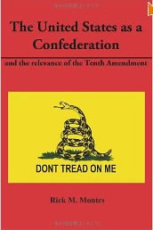

Those hoof beats die not upon fame's crimson sod, But will ring through her song and her story; |
Welcome! This Web site is under construction so please check back soon.
Our goal is to provide the most extensive information on the greatest American Cavalry leader and Patriot.
I need your help! Please contact us with any information you may want to add or see on this site. I will gladly give credit to anyone who contributes.
Lt. General Nathan Bedford Forrest's Farewell Address To His Troops Headquarters, Forrest's Cavalry Corps Gainsville, Alabama May 9, 1865 By an agreement made between Liet.-Gen. Taylor, commanding the Department of Alabama. Mississippi, and East Louisiana, and Major-Gen. Canby, commanding United States forces, the troops of this department have been surrendered. I do not think it proper or necessary at this time to refer to causes which have reduced us to this extremity; nor is it now a matter of material consequence to us how such results were brought about. That we are BEATEN is a self-evident fact, and any further resistance on our part would justly be regarded as the very height of folly and rashness. The armies of Generals LEE and JOHNSON having surrendered. you are the last of all the troops of the Confederate States Army east of the Mississippi River to lay down your arms. The Cause for which you have so long and so manfully struggled, and for which you have braved dangers, endured privations, and sufferings, and made so many sacrifices, is today hopeless. The government which we sought to establish and perpetuate, is at an end. Reason dictates and humanity demands that no more blood be shed. Fully realizing and feeling that such is the case, it is your duty and mine to lay down our arms -- submit to the “powers that be” -- and to aid in restoring peace and establishing law and order throughout the land. The terms upon which you were surrendered are favorable, and should be satisfactory and acceptable to all. They manifest a spirit of magnanimity and liberality, on the part of the Federal authorities, which should be met, on our part, by a faithful compliance with all the stipulations and conditions therein expressed. As your Commander, I sincerely hope that every officer and soldier of my command will cheerfully obey the orders given, and carry out in good faith all the terms of the cartel. Those who neglect the terms and refuse to be paroled, may assuredly expect, when arrested, to be sent North and imprisoned. Let those who are absent from their commands, from whatever cause, report at once to this place, or to Jackson, Miss.; or, if too remote from either, to the nearest United States post or garrison, for parole. Civil war, such as you have just passed through naturally engenders feelings of animosity, hatred, and revenge. It is our duty to divest ourselves of all such feelings; and as far as it is in our power to do so, to cultivate friendly feelings towards those with whom we have so long contended, and heretofore so widely, but honestly, differed. Neighborhood feuds, personal animosities, and private differences should be blotted out; and, when you return home, a manly, straightforward course of conduct will secure the respect of your enemies. Whatever your responsibilities may be to Government, to society, or to individuals meet them like men. The attempt made to establish a separate and independent Confederation has failed; but the consciousness of having done your duty faithfully, and to the end, will, in some measure, repay for the hardships you have undergone. In bidding you farewell, rest assured that you carry with you my best wishes for your future welfare and happiness. Without, in any way, referring to the merits of the Cause in which we have been engaged, your courage and determination, as exhibited on many hard-fought fields, has elicited the respect and admiration of friend and foe. And I now cheerfully and gratefully acknowledge my indebtedness to the officers and men of my command whose zeal, fidelity and unflinching bravery have been the great source of my past success in arms. I have never, on the field of battle, sent you where I was unwilling to go myself; nor would I now advise you to a course which I felt myself unwilling to pursue. You have been good soldiers, you can be good citizens. Obey the laws, preserve your honor, and the Government to which you have surrendered can afford to be, and will be, magnanimous. N.B. Forrest, Lieut.-General Headquarters, Forrest's Cavalry Corps Gainesville, Alabama May 9, 1865 |
Nathan Bedford Forrest Racist? Read OnForrest's speech during a meeting of the "Jubilee of Pole Bearers" is a story that needs to be told. Gen. Forrest was the first white man to be invited by this group which was a forerunner of today's Civil Right's group. A reporter of the Memphis Avalanche newspaper was sent to cover the event that included a Southern barbeque supper. Miss Lou Lewis, daughter of a Pole Bearer member, was introduced to Forrest and she presented the former general a bouquet of flowers as a token of reconciliation, peace and good will. On July 5, 1875, Nathan Bedford Forrest delivered this speech: "Ladies and Gentlemen, I accept the flowers as a memento of reconciliation between the white and colored races of the Southern states. I accept it more particularly as it comes from a colored lady, for if there is any one on God's earth who loves the ladies I believe it is myself. (Immense applause and laughter.) I came here with the jeers of some white people, who think that I am doing wrong. I believe I can exert some influence, and do much to assist the people in strengthening fraternal relations, and shall do all in my power to elevate every man, to depress none. (Applause.) I want to elevate you to take positions in law offices, in stores, on farms, and wherever you are capable of going. I have not said anything about politics today. I don't propose to say anything about politics. You have a right to elect whom you please; vote for the man you think best, and I think, when that is done, you and I are freemen. Do as you consider right and honest in electing men for office. I did not come here to make you a long speech, although invited to do so by you. I am not much of a speaker, and my business prevented me from preparing myself. I came to meet you as friends, and welcome you to the white people. I want you to come nearer to us. When I can serve you I will do so. We have but one flag, one country; let us stand together. We may differ in color, but not in sentiment. Many things have been said about me which are wrong, and which white and black persons here, who stood by me through the war, can contradict. Go to work, be industrious, live honestly and act truly, and when you are oppressed I'll come to your relief. I thank you, ladies and gentlemen, for this opportunity you have afforded me to be with you, and to assure you that I am with you in heart and in hand." (Prolonged applause.) End of speech.1 Nathan Bedford Forrest again thanked Miss Lewis for the bouquet and then gave her a kiss on the cheek. Such a kiss was unheard of in the society of those days, in 1875, but it showed a token of respect and friendship between the general and the black community and did much to promote harmony among the citizens of Memphis. 1. J.H. Sears, Charles Kelly Barrow "Black Southerners In Confederate Armies" (Pelican, 2007) |
Home |
Famous Battles |

The United States as a Confederation and the Relevance of the Tenth Amendment is a concise history of our Republic and its Constitution. A must read for anyone wanting to understand the true relationship between the Federal and State governments. Click Here to purchase
 Deo Vindice: States Rights Car Bumper Sticker by AClarion Make your own bumper sticker online at zazzle.com |

Deo Vindice: States Rights Bumper Stickers by AClarion
Look at more Bumper Bumper Stickers at zazzle
For a REAL history education click the banner above.